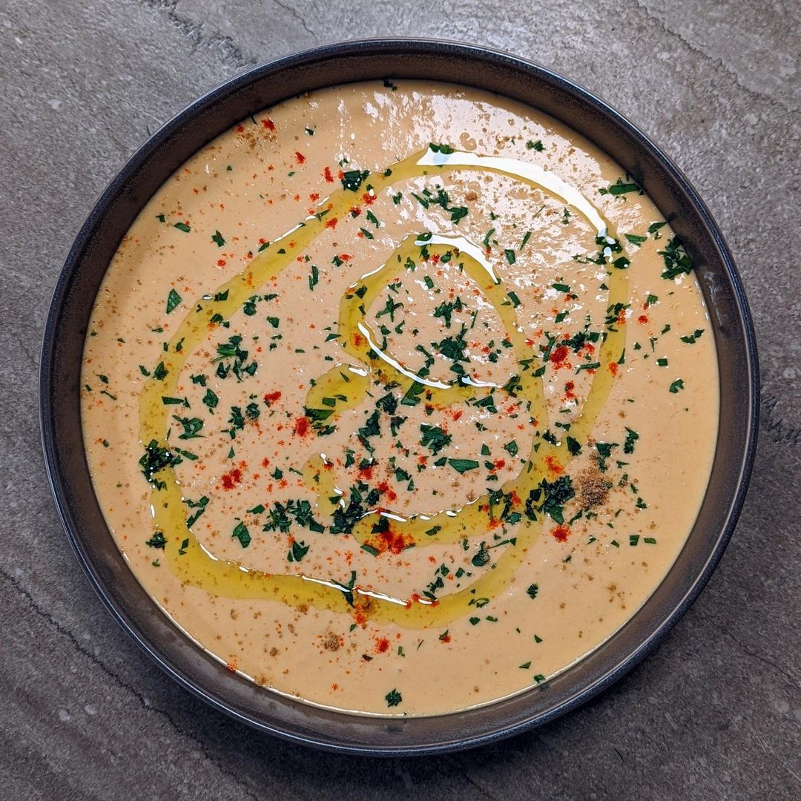

Smooth Hummus


Description
A simple hummus that is whipped up smooth in a blender, because I hate cleaning the food processor. The recipe allows for some creativity with the toppings and includes some suggestions. I've made this before with white (cannellini) beans and it worked just as well. Serves 4 as an appetizer with warm pita or pita chips.
Ingredients
- 1 (15oz) can chickpeas (drained/rinsed)
- 1 clove garlic (peeled)
- 1/4 tsp cayenne
- 1/2 tsp kosher salt
- 1/4C (60g) lemon juice
- 1/4C (60g) water
- 1/4C (60g) tahini
- 1/4C (60g) extra virgin olive oil
Steps
- Add all ingredients, except tahini and olive oil, to a blender. Blend until smooth.
- Add tahini and olive oil. Blend until smooth.
- Taste for salt, acid, and heat. Adjust to your liking.
- Transfer hummus to a nice looking deep plate. Cover tightly and refrigerate for 30 minutes or up to 1 week.
- When ready to serve you can optionally dress the hummus (see below).
Dress It Up
To serve the hummus you can warm it gently in the microwave if desired and garnish with any of the below toppings.
- pine nuts (toasted)
- slivered almonds (toasted)
- roasted red peppers (chopped)
- olives (sliced)
- parsley (chopped)
- cilantro (chopped)
- chives (minced)
- sumac
- paprika or cayenne
- cumin
- extra virgin olive oil
Enjoy!